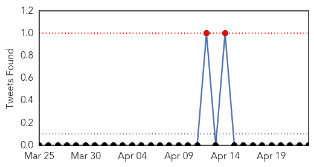
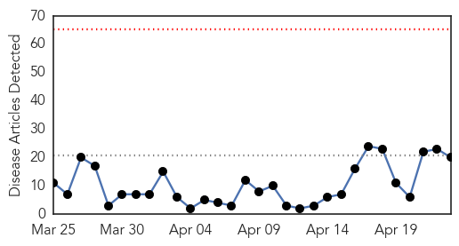

Influenza
30-Day Web Trend
1 alerts, 0 warnings

30-Day Twitter Trend
2 alerts, 0 warnings

Article Locations

Article Confidences

Top Articles:
- 0.999
- Medicines start pouring in after Supreme Court order
- 0.998
- Millions of birds being culled in US, Africa and India as different strains infect poultry
- 0.990
- Another NEW JERSEY resident attacked by a COYOTE ~ LYME DISEASE a risk in all PENNSYLVANIA counties ~ Death in COLORADO confirmed as HANTAVIRUS ~ POWASSAN VIRUS alerts in MASSACHUSETTS and PENNSYLVANI
- 0.988
- 4 people most vulnerable to flu complications and why they should vaccinate
- 0.978
- Queensland doctors issue vaccination reminder for children ahead of flu season
- 0.975
- Bird flu takes toll on Central Minnesota turkey farmers
- 0.970
- Delayed flu vaccine hits Murraylands GPs, chemists
- 0.964
- Warm weather, vaccines may be best bet against bird flu
- 0.947
- Minnesota declares state of emergency over bird flu in poultry
- 0.944
- Poultry in Midwest infected with bird flu
- 0.939
- Colorado: Phillips County man died of hantavirus, not flu
- 0.938
- USDA hopes weather will help as H5N2 outbreaks mount
- 0.937
- Alabama poultry producers track avian flu outbreak
- 0.911
- USDA Working On Bird Flu Vaccine Despite Low Risk To Humans
- 0.892
- Canine flu arrives in Ohio
- 0.890
- Factory farms are hotbeds for viruses
- 0.873
- The Archivist Files: How LA handled the 1918 flu pandemic
- 0.871
- Daily Jefferson County Union: News
- 0.867
- With bird flu spreading, USDA starts on potential vaccine
- 0.820
- Why you should get a yearly flu jab
- 0.799
- Michigan ready to respond if bird flu outbreak hits here
- 0.798
- BIRD FLU: State of emergency declared in Minnesota - Story
- 0.770
- Another flock quarantined: Six cases of bird flu in Wisconsin, more than 1 million chickens affected
- 0.751
- April 22, 2015 Archives
- 0.751
- April 22, 2015 Archives
- 0.683
- Bird Flu ‘Catastrophe’ Mounts Amid Concern Virus Is Airborne
- 0.673
- Bird flu shows no signs of abating
- 0.673
- Deadly bird flu continues march across state
- 0.653
- 6th Case of Bird Flu Detected in Wisconsin
- 0.645
- Bird flu 'catastrophe' mounts in US amid concern virus is airborne
- 0.545
- Canine flu hitting dog-related businesses
- 0.502
- the edge of knowledge
Top Tweets:
- 0.726
- RT: Who is eligible for free flu vaccine? - Medical Observer http://t.co/ssoekIs0ei influenza VaccinesWork VaccinateYourKi…
Measles
30-Day Web Trend
0 alerts, 0 warnings

30-Day Twitter Trend
0 alerts, 0 warnings

Article Locations

Article Confidences

Top Articles:
- 0.974
- California Department of Public Health declares measles outbreak over
- 0.967
- UNICEF, partners support mass vaccination campaign in Sudan - Xinhua
- 0.964
- UNICEF, partners support mass vaccination campaign in Sudan
- 0.950
- Hospital first sent measles patient home
- 0.944
- First They Came for the Anti-Vaxxers
- 0.902
- Nearly 8 million children in Sudan to be immunized against measles following deadly outbreak – UNICEF
- 0.862
- Austria sees increase in cases of measles outbreaks
- 0.852
- One child in 5 still not vaccinated – WHO
- 0.848
- State health officials sound measles alarm
- 0.830
- Health officials raise measles spread concerns
- 0.781
- Yemen violence death toll tops 1,000
- 0.680
- Study rules out link between autism, MMR vaccine even in at-risk kids
- 0.677
- Kenya : One child in five still not vaccinated, says World Health Organization
- 0.622
- World Immunization Week: 22 million infants miss out on basic vaccines, says WHO
- 0.610
- Modern Healthcare Modern Healthcare business news, research, data and events
- 0.604
- Catonsville High School parents warned of possible TB exposure
- 0.550
- World Immunization Week: UN warns global vaccination targets ‘far off track’
- 0.543
- WHO calls for renewed efforts in global vaccination - Xinhua
- 0.521
- News reader
- 0.506
- 10 U.S. States Now Considering Mandatory Vaccination
Top Tweets:
-
No tweets found for Apr 23, 2015